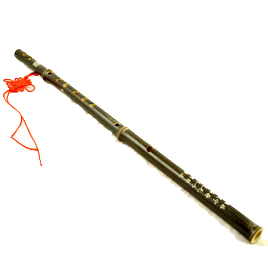
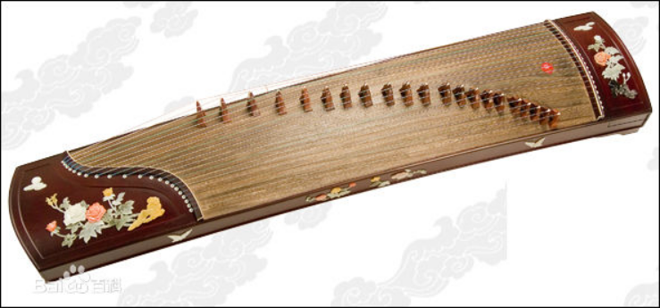
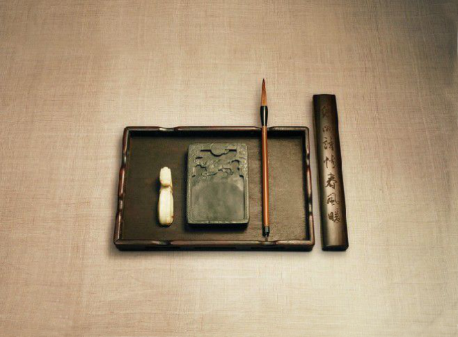
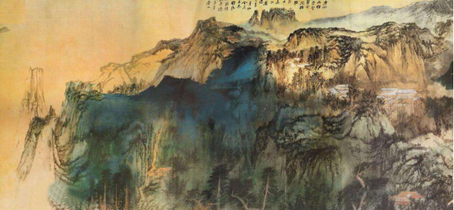

笛子，是古老的汉族乐器，也是汉族乐器中最具代表性最有民族特色的吹奏乐器。中国传统音乐中常用的横吹木管乐器之一。
二胡（拼音：Erhu） 始于唐朝，
称“奚琴”，至今已有一千多年的历
史。是一种中国传统拉弦乐器。二胡，即
二弦胡琴，又名“南胡”、“嗡子”，二胡
是中华民族乐器家族中主要的弓弦乐器
（擦弦乐器）之一。
二胡名曲有《二泉映月》、《良宵》、《听松》、
《赛马》等。
-

古筝
古筝又名汉筝、秦筝、瑶筝、鸾筝，是中国汉民族传统乐器中的筝乐器，属于弹拨乐器。它是中国独特的、重要的民族乐器之一。

中国古代传统文化中的文书工具，即笔、墨、纸、砚。文房四宝之名，起源于南北朝时期。历史上，“文房四宝”所指之物屡有变化。在南唐时，“文房四宝”特指安徽宣城诸葛笔、安徽徽州李廷圭墨、安徽徽州澄心堂纸，安徽徽州婺源龙尾砚。自宋朝以来“文房四宝”则特指宣笔（安徽宣城)、徽墨（安徽徽州歙县)、宣纸（安徽宣城泾县)、歙砚（安徽徽州歙县）、洮砚（甘肃卓尼县）、端砚（广东肇庆，古称端州），元代以后湖笔（浙江湖州）渐兴，宣笔渐衰，改革开放后，宣笔渐渐恢复了生机。

山水画，简称“山水”。中国画的一种。描写山川自然景色为主体的绘画。在魏晋、南北朝已逐渐发展，但仍附属于人物画，作为背景的居多；隋唐始独立，如展子虔的设色山水，李思训的金碧山水，王维的水墨山水，王洽的泼墨山水等；五代、北宋山水画大兴，作者纷起，如荆浩、关仝、李成、董源、巨然、范宽、许道宁、燕文贵、宋迪、王诜、米芾、米友仁的水墨山水，王希孟、赵伯驹、赵伯骕的青绿山水，南北竞辉，达到高峰。从此成为中国画中的一大画科；元代山水画趋向写意，以虚带实，侧重笔墨神韵，开创新风；明清及近代，续有发展，亦出新貌。表现上讲究经营位置和表达意境。传统分法有水墨、青绿、金碧、没骨、浅绛、淡彩等形式。 [1]